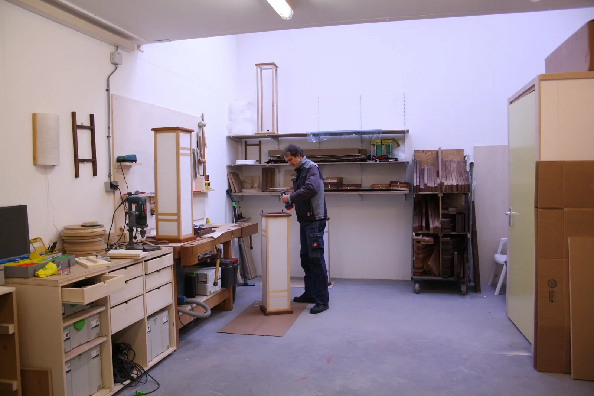
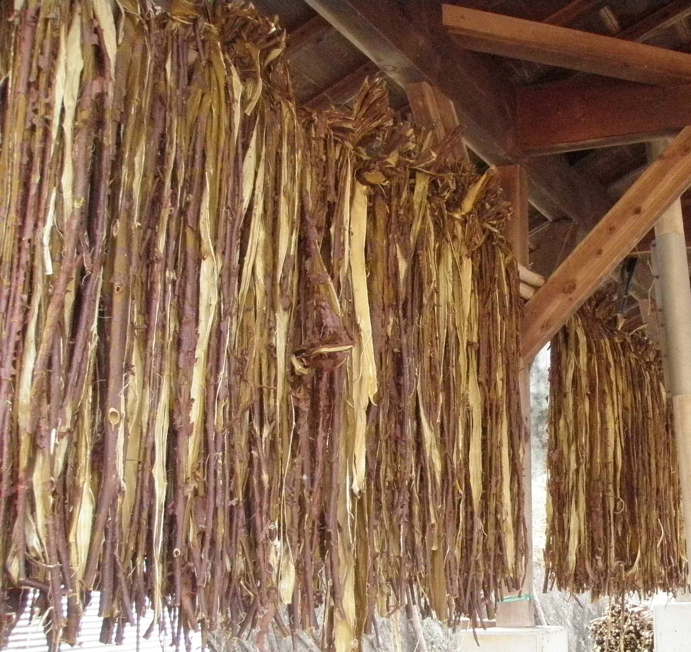
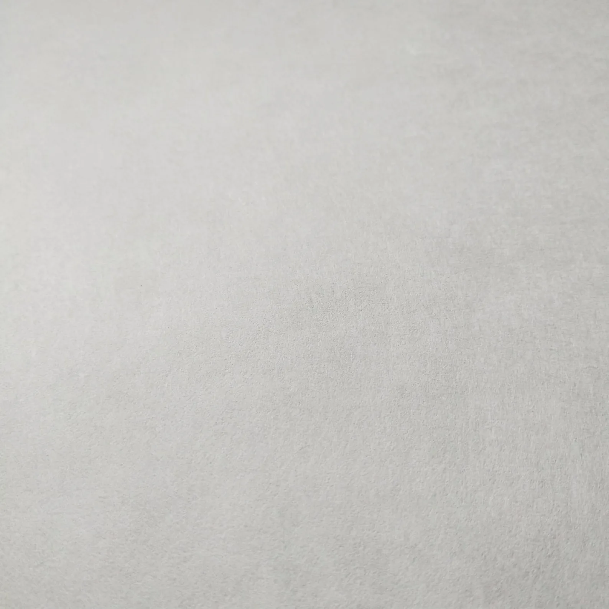
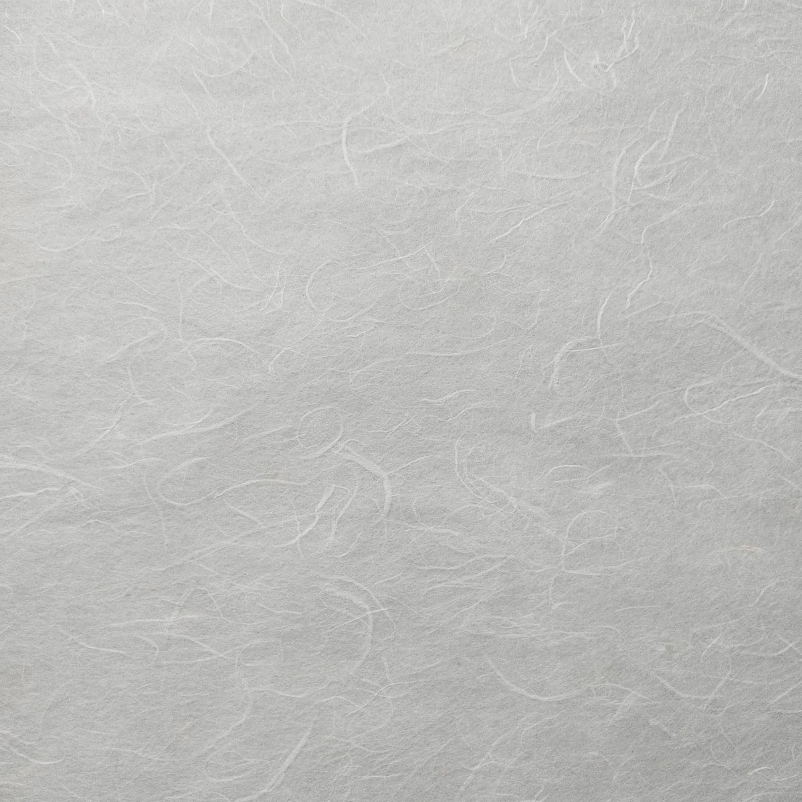
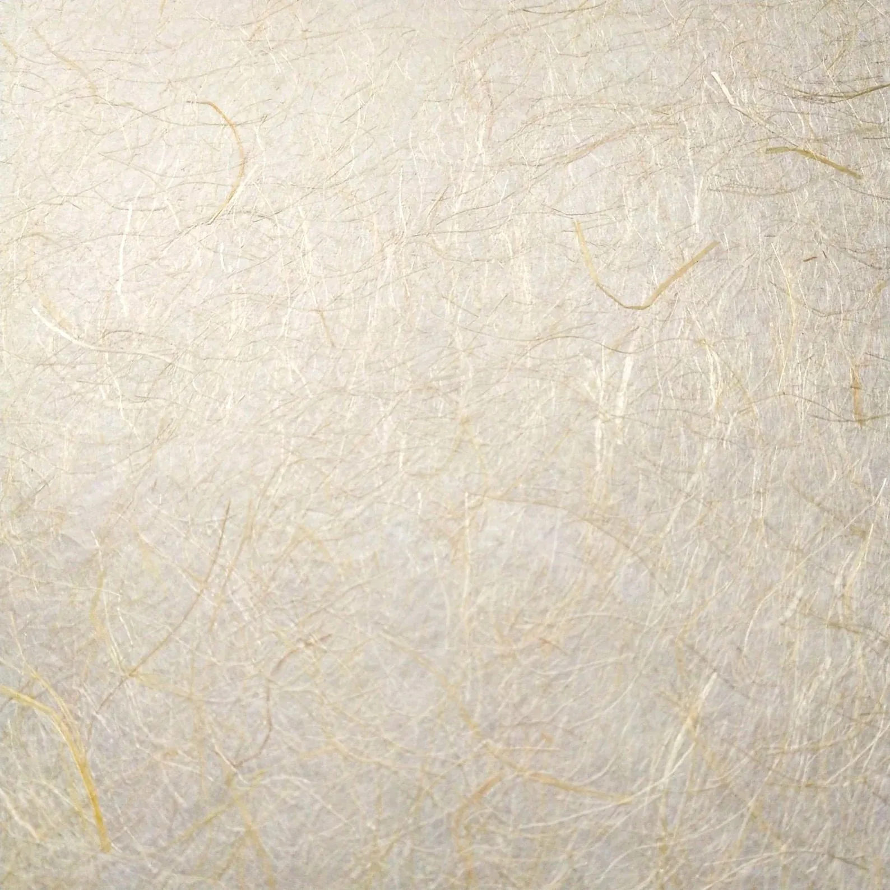
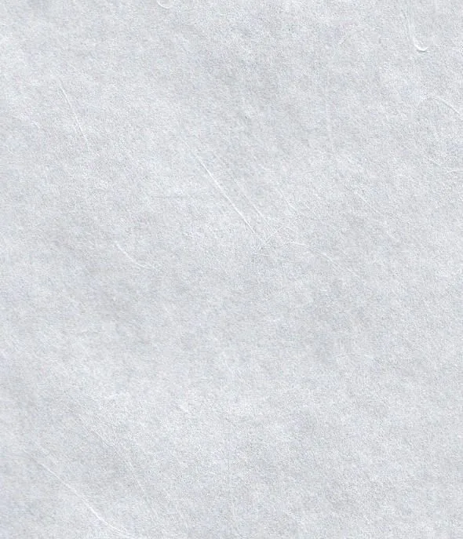
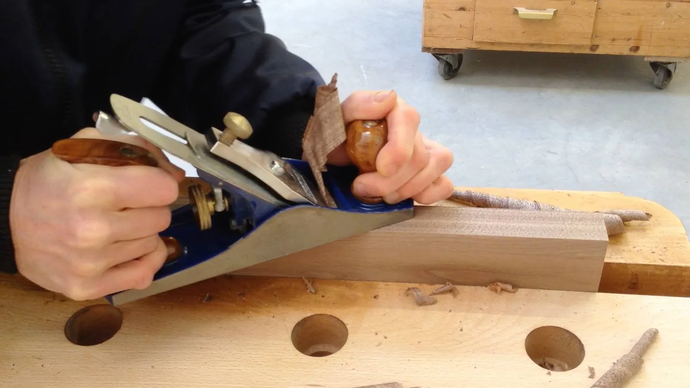

Klantcontact
Elke lamp wordt in nauw overleg met jou gemaakt, zodat hij precies aansluit bij je wensen en interieur.
De maker
OostersLicht is de combinatie van vier interesses: de oosterse cultuur, licht, meditatie en ambacht.

Jelle Kruidenier
Jelle Kruidenier is afgestudeerd in de Chinese taal en cultuur, rondde de meubelmakersvakschool af en is altijd geboeid geweest door licht. In OostersLicht komen die lijnen samen.
Elke lamp wordt in nauw overleg gemaakt, zodat hij precies aansluit bij jouw wensen en interieur.
Elke lamp wordt in nauw overleg met jou gemaakt, zodat hij precies aansluit bij je wensen en interieur.
Met traditionele technieken en oog voor detail maakt Jelle elke lamp volledig met de hand.
Een minimalistisch, tijdloos ontwerp waarin rust en eenvoud centraal staan.
Het proces
Van eerste schets tot brandende lamp doorloopt elk exemplaar dezelfde vier fasen — allemaal in dezelfde werkplaats, door dezelfde handen.
Elk model begint met een schets. Daarna maakt Jelle een model van karton om vorm en verhoudingen te testen, voordat de houtsoort wordt gekozen.
Met technieken uit zijn meubelmakersopleiding zaagt, schaaft en schuurt Jelle het hout, en maakt hij de traditionele houtverbindingen voor het frame.
Het handgeschepte washipapier wordt met de hand gespannen over stevig, flexibel plastic, dat vervolgens in het frame wordt geplaatst — zodat het licht gelijkmatig door de vezels valt.
Tot slot plaatst Jelle een energiezuinige LED-lamp in de behuizing, die zorgt voor een warm en gelijkmatig licht door het washipapier heen.

Materiaal 01
OostersLicht gebruikt authentiek Japans papier (washi), dat rechtstreeks in Japan wordt besteld en gemaakt. De basis is kozo-papier (kozogami), van de bast van de moerbeiboom. Dit stevige papier werd in Japan van oudsher gebruikt voor scheidingswanden en vensters (shoji) — en dat gebeurt vandaag nog steeds.
Voor een decoratiever effect gebruiken we ook unryu kozo: papier met lange, zichtbare vezels die als wolken of drakenstaarten door het vel lopen (雲龍紙, “wolkendraken-papier”). Daarnaast papier met manillahennep-vezels, iets geliger van kleur en daarom kinwashi ofwel “goudpapier” genoemd.





Materiaal 02
We selecteren zorgvuldig hoogwaardige houtsoorten die de lampen structuur en een natuurlijk karakter geven, passend bij een minimalistisch en tijdloos ontwerp.
Bewust kiezen we voor Europese houtsoorten in plaats van tropisch hout. Wereldwijd verdwijnen nog altijd enorme oppervlaktes regenwoud door illegale kap, en daar willen wij met onze lampen niet aan bijdragen. Dat is ook nergens voor nodig: dichter bij huis groeien houtsoorten die minstens zo mooi zijn en verantwoord worden geoogst.
Bekijk alle houtsoortenVerder lezen
Benieuwd hoe dit ambachtelijke papier wordt gemaakt? Meer achtergrond bij Wikipedia — Washi, Wikipedia — Shoji en Awagami Factory.
De lampen
Bekijk wat er uit de werkplaats komt — de Japanse collectie en de lampen naar De Stijl.
Bekijk de collectie